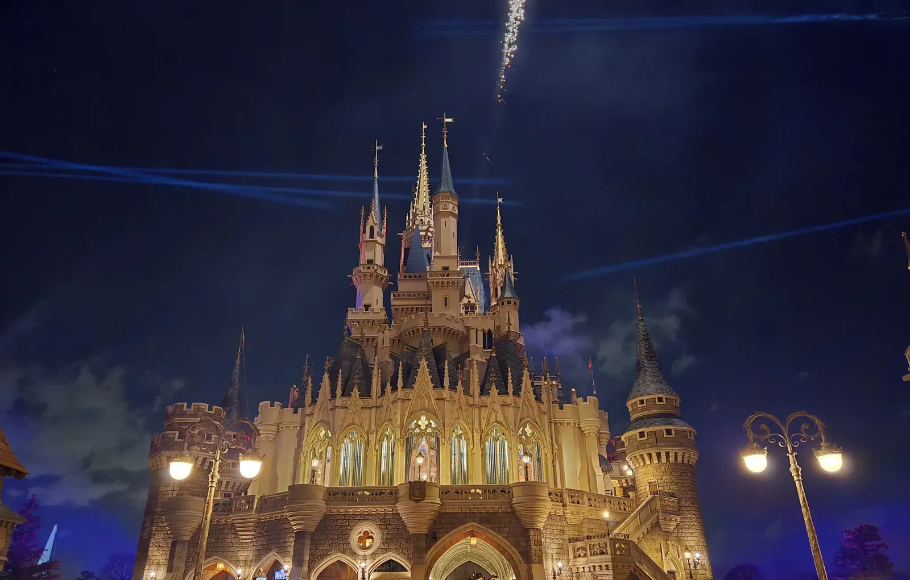

Color Theory
After sunset on January 7th, Cinderella Castle turned into a canvas: sapphire blue, rose pink, violet, back to gold again, with laser lines slicing through the clouds behind it. We had spent a few days in Tokyo before giving Tokyo Disney Resort two days, out at Maihama on the Chiba side of Tokyo Bay, and this was the first, at Tokyo Disneyland. My phone's timestamps put the whole batch of photos inside roughly eight minutes, all from one spot in front of the castle. Dozens of near-identical frames, and I regret none of them. Every shot is a slightly different castle.
The fireworks came in layers. Sparks crowned the spires first, then rockets climbed in a line and trailed smoke up into the dark, and pink and teal bursts left the whole sky glowing behind the towers. It's all choreographed to the second, every beam and burst on a timer, and it worked on me anyway. Maybe wonder doesn't care where it comes from. Stand in front of the castle and stay put, because nearly everything happens overhead. All of these came off a phone, which still feels a little like cheating.

The next day we went to Tokyo DisneySea, which has no twin anywhere else in the world. Where Disneyland runs on fairy tales, DisneySea runs on the ocean and the romance of exploration, and after dark it leans into the adventure. A stone temple glowed blue among the palms, fire licking up its steps, a carved face staring down from the top like it had seen worse. Elsewhere in the park, a curving lavender-and-gold building with oval windows looked as if it had grown there rather than been built. Different park, same trick: it makes you look up.